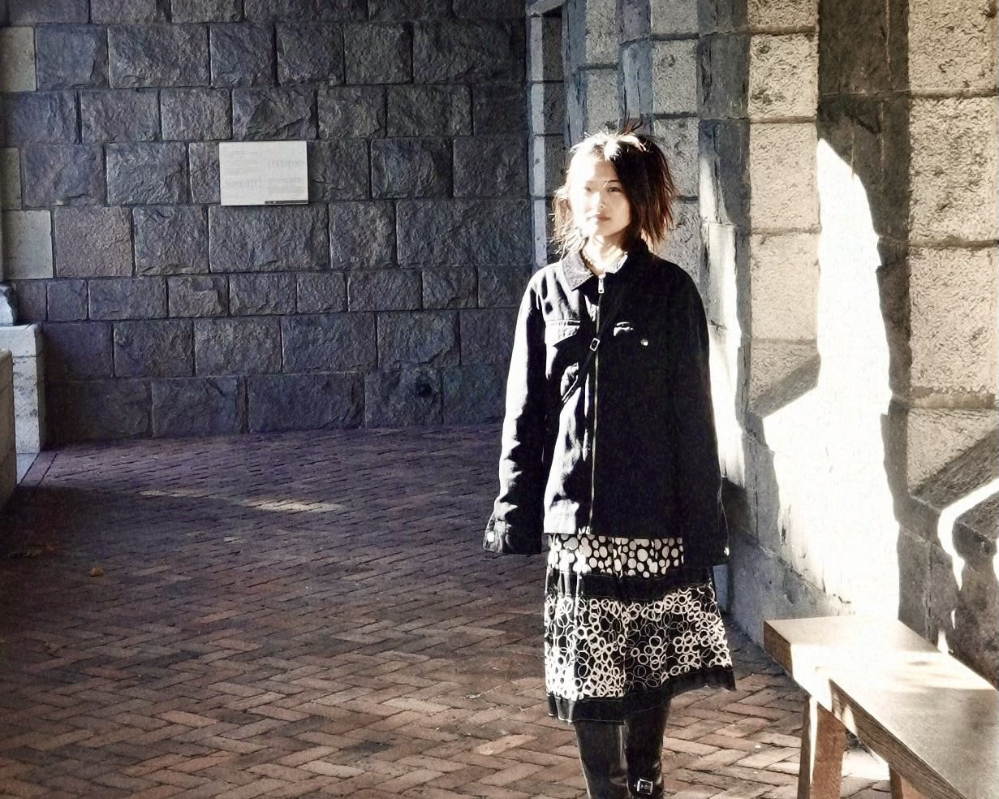

01
Marketing & Communications
Campaigns, newsletters, and event promotion that turn attention into attendance, inquiries, and lasting relationships.
Wang Dongling, from the Biennale to a saleFilm · Photography · Social-first content · Audience research · Community programs
B.S. Integrated Design and Media, New York University, 2025
Minor in Media, Culture, and Communication

Listen
Audience research and cultural context, so the work speaks to real people.
Make
Film, photography and social-first content that let artists and makers speak in their own voices.
Gather
Programs and community events that bring newcomers in and keep them coming back.
01
Campaigns, newsletters, and event promotion that turn attention into attendance, inquiries, and lasting relationships.
Wang Dongling, from the Biennale to a sale02
Short-form video, photography and photo editing, and campaign graphics—produced end to end, on real deadlines.
Editorial and campaign collateral03
Understanding who is reading, where, and in what state of mind—then shaping the message to meet them there.
One exhibition, five formats04
Turning complex, nuanced histories into clear narratives that leave people feeling seen, heard, and holding a new insight.
Short-form artist narratives
01
Communications and growth for a Palo Alto gallery—campaigns, short-form video, photography, social media, collateral, and public programming.
Case study

02
A Peninsula magazine, from backstage. The T9 mark, the wordmark, and Issue 01, before it prints.
Case study
I believe good communication leaves people feeling understood. I want to work with teams building useful things, in tech, AI, and culture.